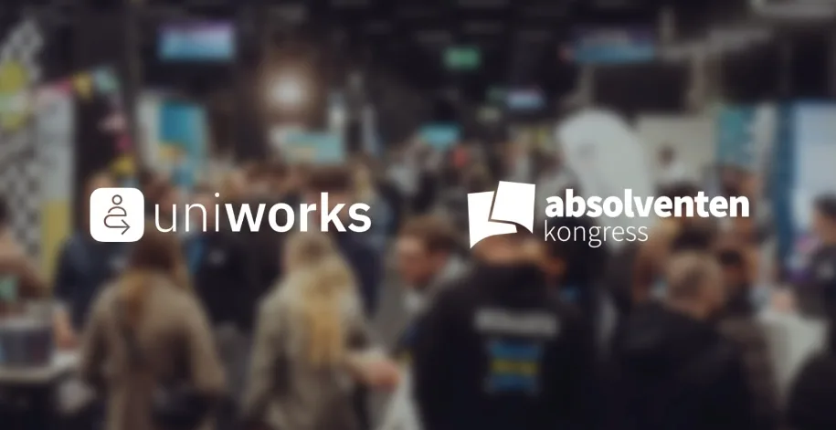

Young Talents begeistern – Karriere Events als Erfolgsfaktor

In Partnerschaft mit dem Absolventenkongress sorgen wir nicht nur dafür, dass Studierende während des Studiums die besten Jobmöglichkeiten bekommen, sondern auch nach ihrem Abschluss!
Es ist längst bekannt: Junge Talente suchen nach mehr als nur einem Job – sie möchten sich mit den Werten ihres Arbeitgebers identifizieren und eine sinnvolle Tätigkeit ausüben. Die Herausforderung der nächsten Jahre liegt darin, diese Erwartungen zu erfüllen und sich gleichzeitig im umkämpften Talentmarkt durchzusetzen. Karriere Events helfen dabei, diese Brücke zu schlagen.
Warum Karriere Events im Recruiting so wertvoll sind
Das Ziel von Recruiter:innen: Offene (Einstiegs-)Stellen erfolgreich zu besetzen und Talente langfristig für das Unternehmen als Arbeitgeber zu begeistern. Karriere Events bieten hierfür die ideale Plattform.
Schluss mit zahllosen Online-Bewerbungen! Live Events haben den Vorteil, dass Recruiter:innen im persönlichen Kontakt direkt herausfinden können, welche Talente zum Unternehmen passen. Das verkürzt nicht nur den Bewerbungsprozess, sondern sorgt auch für eine höhere Qualität der eingehenden Bewerbungen. Der Messestand kann optimal genutzt werden, um die eigene Unternehmenskultur zu vermitteln und das Unternehmen zu präsentieren.
Absolventenkongresse: Die Career & Life Events für Young Talents
Unternehmen, die auf der Suche nach qualifizierten Nachwuchstalenten sind, finden mit den Absolventenkongressen eine starke Plattform: Die größte Karriere-Event-Reihe für Studierende, Absolvent:innen und Young Professionals in Deutschland bietet an sechs Event Standorten die Chance, bis zu 35.000 Top Talente kennenzulernen.
Das Besondere an den Absolventenkongressen? Young Talents erwartet hier keine klassische Jobmesse, sondern ein Event mit Highlights wie einer Gaming- und Coaching Zone, kostenfreien Bewerbungsfotos und einem CV Check.
Unternehmenskultur und Werte authentisch vermitteln
Für Aussteller:innen bietet der Absolventenkongress die einzigartige Gelegenheit, junge Talente in inspirierender Atmosphäre abzuholen und das Markenimage innerhalb der jungen Zielgruppe zu stärken. Unterstützend dazu steht ein digitaler Talentpool zur Verfügung, der es ermöglicht, vor und nach dem Event gezielt Bewerber:innen anzusprechen und Kontakte aufrechtzuerhalten.
Young Talents begeistern und gewinnen
Young Talents kennenlernen und begeistern: Erlebe die Absolventenkongresse und entdecke, wie einfach und effektiv Recruiting & Employer Branding sein können. Der nächste Absolventenkongress ist der Absolventenkongress Deutschland, am 28. & 29. November 2024 in Köln.